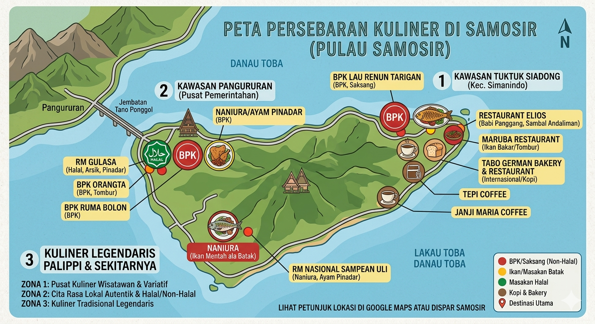
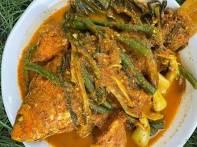
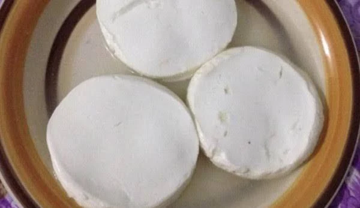
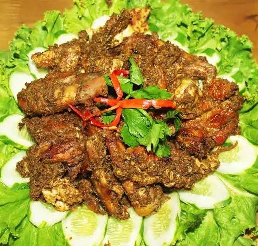
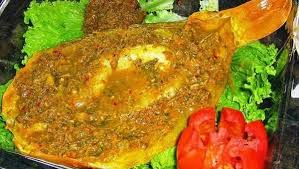

Arsik ikan mas adalah hidangan tradisional khas Batak (Sumatera Utara) berupa ikan mas yang dimasak kering dengan bumbu kuning tanpa santan

Dali ni Horbo atau Bagot ni horbo adalah air susu kerbau yang diolah secara tradisional dan merupakan makanan khas Batak Toba

Manuk Napinadar atau Ayam Napinadar adalah masakan khas Batak yang biasanya dihidangkan pada pesta adat tertentu

Naniura Sering disebut sebagai "sashimi Nusantara", hidangan ini berupa ikan mas yang diolah tanpa melalui proses memasak dengan api atau panas.